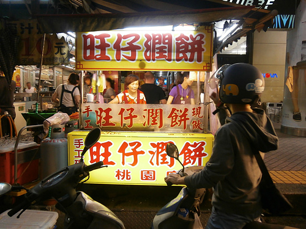
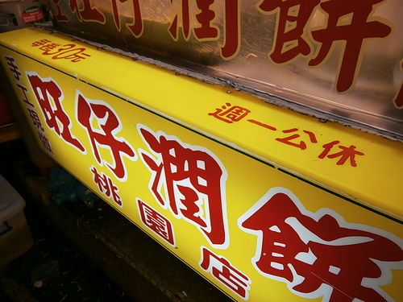
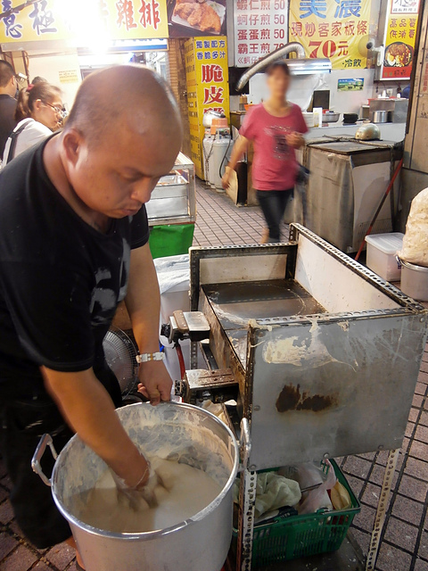
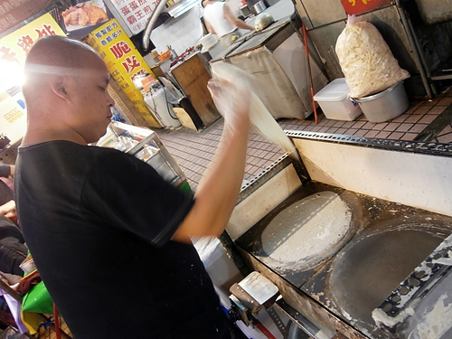
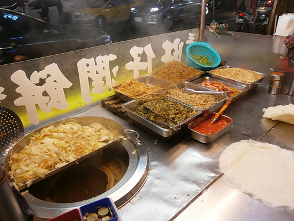
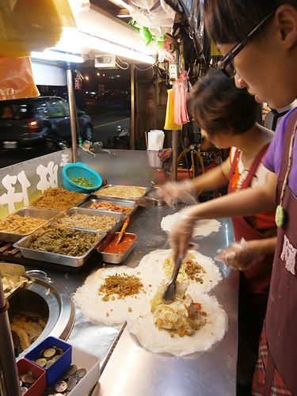
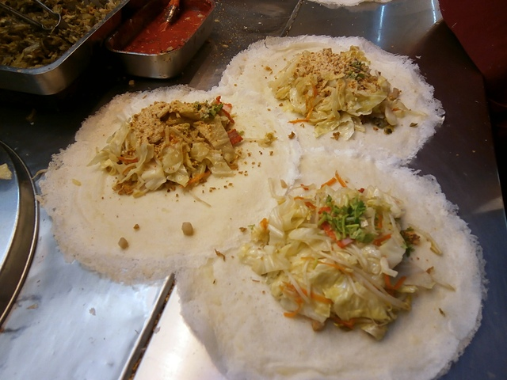
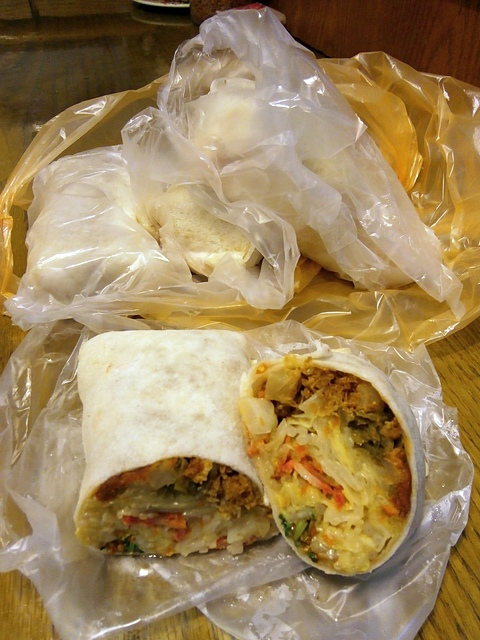
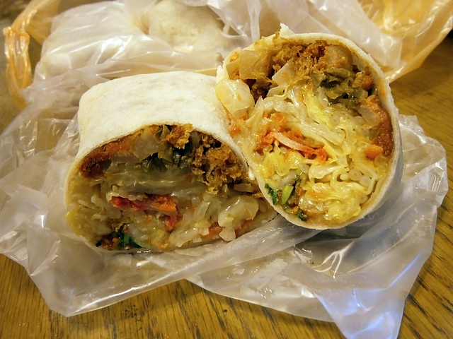

桃園火車站附近有兩家好吃的潤餅攤，一家叫旺仔潤餅，
另外一家叫姜記潤餅，兩家攤子位於遠東百貨側門的馬路對面，
相隔不到五十公尺。兩家生意都很好，
各有死忠的顧客群，今天帶小朋友來遠東百貨上課，
剛好沒有人在排隊，便選了離我較近的旺仔潤餅來嚐嚐看。

旺仔潤餅，一捲30元，強調手工現做現包，
連潤餅皮都是現場製作的，非常的新鮮。

這一位在攤位旁的先生應該就是老闆了，
在熱熱的平板爐旁邊，不停翻動著黏稠的潤餅皮粉漿。

站在這爐子旁邊溫度還頗高的，
只見老闆拿起一糰潤餅皮粉漿一圈一圈地在熱熱的鐵盤上畫圈。
一會兒餅皮遇熱熟了後，再快速的徒手將熱熱的餅皮拿起。
這裡的潤餅皮也有在販賣喔！
如果想自己在家DIY包潤餅的話，可以跟老闆詢價。

小小的攤販，料理台始終保持得乾乾淨淨，衛生看的到。

因為用餐時段生意很好，包裹及製作潤餅的工作由老闆娘跟女兒兩人一起負責，人多的時候還是得等上一會。

潤餅裡包的餡料有大量汆燙過的高麗菜、紅蘿蔔、豆芽菜，
還有甜甜的花生粉、肉鬆、菜脯、酸菜、蛋酥、香菜跟紅糟肉。
老是在外的上班族可以把潤餅當作正餐的選項，
吃一捲潤餅就可以補充每日所需的蔬菜了。

包裹成長條狀的潤餅，很方便邊走邊吃，
一時失心瘋衝動買了四捲回家，
還好吃完後大家評價都很好，便宜又大碗，物超所值。

胖胖的潤餅拿起來沉沉的，很有份量，
餅皮雖然薄但是很有韌性，包著這麼多餡料但不容易破。
現做的潤餅皮吃起來很有彈性，有股淡淡的麵粉香。
飽滿的餡料斷面圖看起來就讓人快流口水，
每一口都吃的到食材豐富的層次感，
清淡卻又美味。內餡看起來跟一般潤餅餡沒什麼兩樣，
可是旺仔潤餅汆燙出來的高麗菜有股蔬菜的甜味，
加上汆燙的火侯控制得宜，吃起來有熱炒的那種脆度，
是我個人很喜歡的口感。
一捲潤餅吃下肚很有飽足感，不愧是學生族群推薦的人氣小吃，
平價的銅板小吃，來桃園千萬不要錯過了。
註：每週一公休日
引用文章:隨意窩